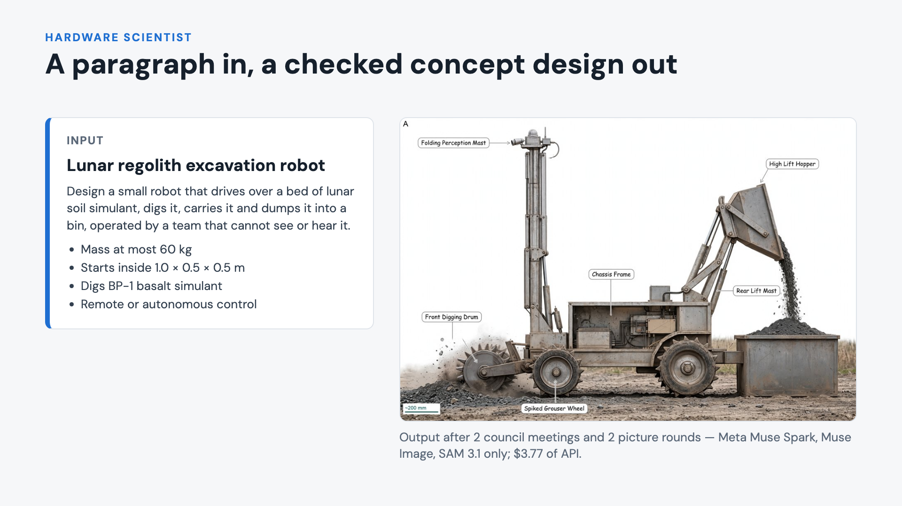
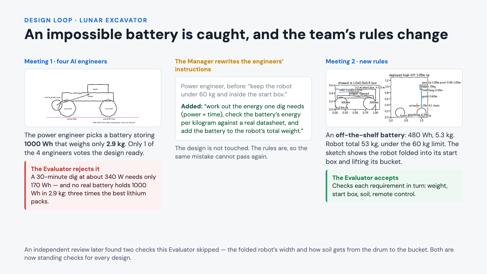
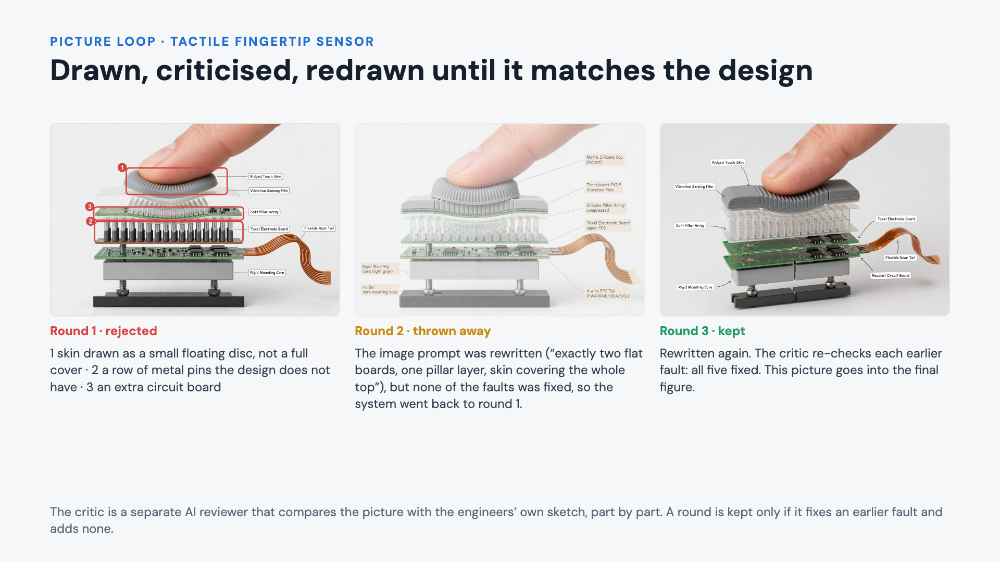
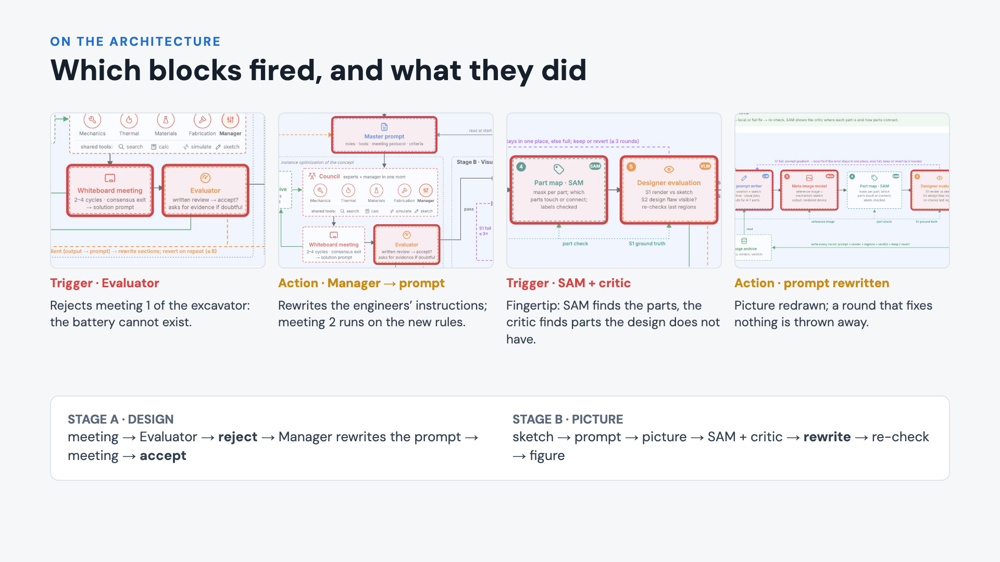
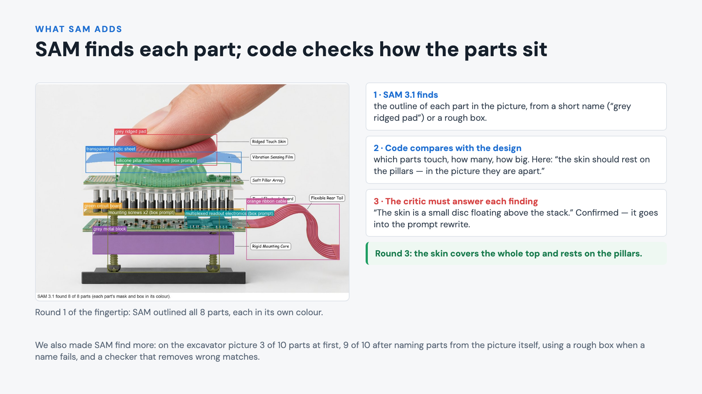
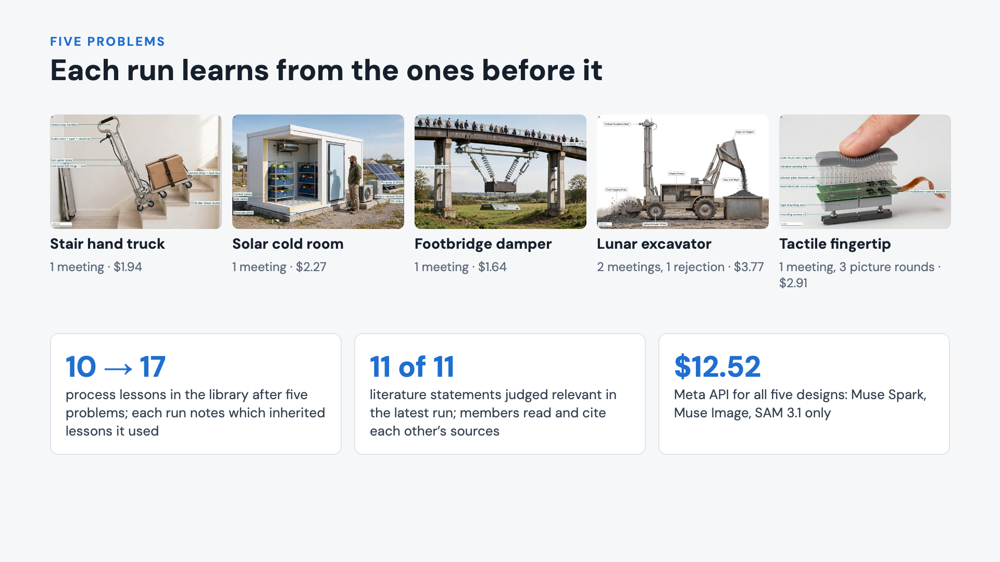

How a design evolves — the slides, each with what it shows in plain words. Full records per problem are in the folders next to this page.

Input is exactly what the system received: one paragraph and four constraints, taken from NASA's Lunabotics competition. Output is the concept figure it produced. The next slides show how it got there: a design loop that rejected and rewrote, and a picture loop that critiqued and fixed.

Meeting 1: four AI engineers (digging and wheels, remote control, power, structure) design the robot on a shared whiteboard. The power engineer chose a battery of 1000 watt-hours weighing 2.9 kilograms; only one engineer voted the design ready. The Evaluator, a separate AI reviewer, recalculated: the robot draws about 340 watts, so a 30-minute dig needs about 170 watt-hours, and 1000 watt-hours in 2.9 kilograms would be 342 watt-hours per kilogram — about three times what real lithium-iron-phosphate packs hold (90 to 110). It rejected the design. The Manager did not fix the design; it rewrote the engineers' instructions, here the power engineer's duties. In meeting 2, under the new rules, the team chose a battery you can buy — 480 watt-hours, 5.3 kilograms — and the robot came to 53 kilograms. The Evaluator accepted. The sketch on the right is a council engineer's own dimension drawing: folded inside the 1 by 0.5 by 0.5 metre start box, and with the bucket raised to pour.

The tactile fingertip sensor is modelled on Meta’s Digit 360 problem: a robot fingertip that feels pressure down to 1 millinewton and the start of a slip. The design is a stack: a soft ridged skin, a thin vibration film, a layer of soft silicone pillars, a circuit board that senses how much each pillar is squeezed, and a rigid core screwed to the finger. Round 1 drew things the design does not have — a second row of metal pins and a third board — and drew the skin as a small disc. The image prompt was rewritten; round 2 fixed none of it and was discarded. Round 3 fixed all five faults and was kept. Pictures are on a plain backdrop with a real finger for scale.

The four frames are zooms into our two architecture figures, with the blocks that fired at that step outlined in red. Stage A: the Evaluator triggered, the Manager acted on the council’s prompt. Stage B: SAM and the critic triggered, the image prompt was rewritten and the picture redrawn. The full sequence with all eight steps is in the document.

SAM 3.1 does not measure anything itself: it finds and outlines a part from a short name or a rough box. Our code turns those outlines into simple facts — which parts touch, how many there are, how big they are relative to each other — and compares them with the design. Each difference goes to the critic, which must confirm or dismiss it. Here the code found the skin and the pillars apart, the critic confirmed the skin was drawn as a small floating disc, the prompt was rewritten, and by round 3 the skin covers the whole stack.

Five problems, each a paragraph and a few constraints. The first three were accepted at their first meeting; the lunar excavator was rejected once and accepted after the Manager rewrote the council’s prompt; the fingertip sensor, modelled on Meta’s Digit 360 problem, needed three picture rounds, one of them reverted. Lessons grow from 10 to 17 across runs, and every run records which inherited lessons it used. Total Meta API cost for the five designs is $12.52.